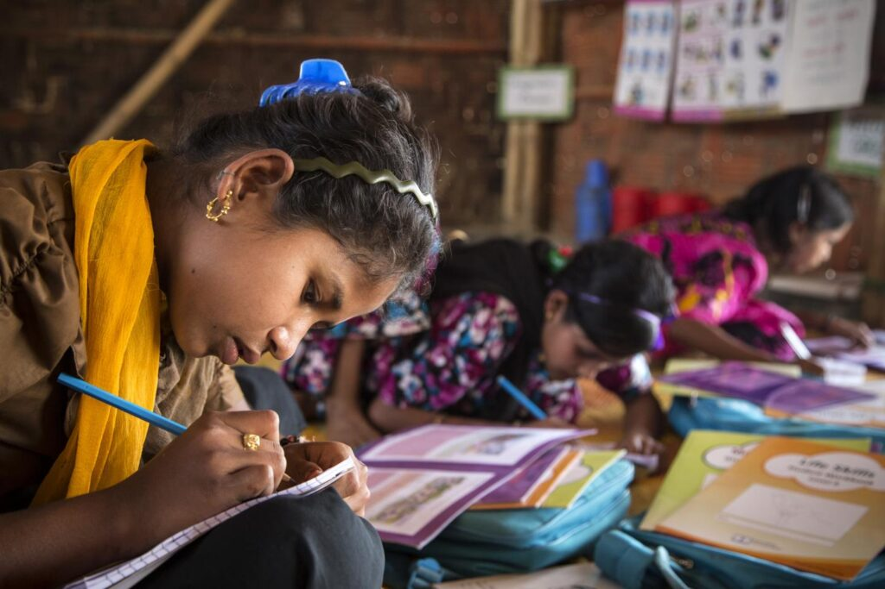

Nos últimos anos, a desigualdade de gênero tem se tornado um assunto recorrente. A luta por um mundo em que homens e mulheres sejam livres para fazer suas escolhas, usufruindo das mesmas responsabilidades, direitos e oportunidades, intensificou-se em meados do século XX, impulsionada, principalmente, pelo movimento feminista. O assunto foi pauta da Rio+20, quando os países membros da Organização das Nações Unidas (ONU) definiram os Objetivos de Desenvolvimento Sustentável a serem alcançados até 2030.
O cartaz segurado pela mulher diz: “What lessens one of us lessens all of us”, que significa, em tradução livre: “O que diminui um de nós diminui todos nós”. Créditos: Unsplash
É importante lembrar, quando falamos sobre igualdade de gênero, que na maioria das sociedades pelo mundo são as mulheres que precisam de políticas para conseguirem alcançar o mesmo patamar dos homens. De acordo com dados levantados pela ONU Mulheres, pessoas do sexo feminino ganham menos que as do sexo masculino e estão mais sujeitas a ter empregos de baixa qualidade. Há apenas 46 países em que as mulheres ocupam mais de 30% das cadeiras no parlamento nacional, e o Brasil não é um deles. A desigualdade entre os gêneros também está refletida nos abusos vivenciados por muitas mulheres pelo mundo. Um terço das mulheres sofre violência física ou sexual em suas vidas. Atualmente, 3 bilhões de mulheres e meninas vivem em países onde o estupro no casamento não é explicitamente tipificado como crime. E a injustiça e as violações também assumem outras formas. Em 1 a cada 5 países, as meninas não têm os mesmos direitos de herança como os meninos, enquanto em outros 19 países as mulheres são obrigadas por lei a obedecer os seus maridos. Esses dados foram levantados pelo relatório “Progresso das Mulheres no Mundo 2019-2020: famílias em um mundo em mudança”, da ONU Mulheres. Dá para perceber que, na maioria das sociedades, os homens têm direta e indiretamente largas vantagens em relação às mulheres. Para romper essas barreiras e alcançar a equidade entre os sexos, a educação é uma arma importante. Ela pode ajudar a empoderar meninas e mulheres pelo mundo. No entanto, até o acesso a ela pode ser um problema. Na África Subsaariana, na Oceania e na Ásia Ocidental, meninas ainda enfrentam dificuldades para entrar tanto na escola primária quanto na secundária. De acordo com a UNESCO, as mulheres representam dois terços dos 750 milhões de adultos sem habilidades básicas de leitura e escrita. No mundo, existem mais meninas do que meninos fora da escola.
A educação é um dos pilares para empoderar as mulheres, e também está na lista dos Objetivos de Desenvolvimento Sustentável. Leia sobre por aqui.
Quando falamos sobre países onde as leis beneficiam os homens e prejudicam as mulheres, como os casos que citamos acima, fica a impressão de que essas situações estão muito longe da nossa realidade. Por isso, é importante lembrar que a desigualdade de gênero pode estar refletida de várias formas na sociedade, não apenas por meio de leis explícitas. No Brasil, legalmente as mulheres e os homens possuem os mesmos direitos, mas, na prática, ainda há uma grande disparidade de oportunidades e tratamentos. Segundo o Instituto Brasileiro de Geografia e Estatística (IBGE), em levantamento realizado em 2017, o rendimento das mulheres equivale a cerca de três quartos da renda masculina. Enquanto a média da renda dos homens foi de R$2.306, a das mulheres foi de R$1.764. A desigualdade econômica também é um problema na América Latina como um todo. Dados do relatório da Comissão Econômica para a América Latina e o Caribe indicam que 27,5% das mulheres da região não possuem renda própria, contra 13,1% da população masculina. Isso implica que cerca de um terço das mulheres do continente depende inteiramente de outros para sua subsistência. Algo que pode explicar essa situação é o fato de que, historicamente, o sexo feminino foi relacionado a tarefas de cuidado com a família e o lar, sem liberdade para trabalhar fora ou realizar atividades para o próprio sustento. Apesar de hoje a situação estar mudando, os dados de 2017 do IBGE indicam que 88% das mulheres ainda são responsáveis pelos afazeres domésticos, o que dificulta a inserção, em condições igualitárias, da população feminina na esfera pública.

Mulheres gastam quase o dobro do tempo dos homens com tarefas domésticas, de acordo com dados de 2018 do IBGE. Créditos: Agência IBGE Notícias
Essa dificuldade é refletida também na esfera política. De acordo com estudo do Fórum Econômico Mundial, o Brasil ocupa a 104ª posição entre os 153 países examinados no quesito representação política feminina. Em 2019, quando a pesquisa foi realizada, somente duas mulheres tinham posição ministerial, por exemplo. Lentamente, por meio de políticas públicas de apoio às mulheres e através de muita luta dos movimentos femininos, a situação vai melhorando. Na pesquisa do Fórum Econômico Mundial, o Brasil ganhou três posições, ficando na 92ª classificação entre 153 países. A América Latina e o Caribe reduziram, até agora, 72,1% de sua desigualdade de gênero. O nosso país ficou um pouco atrás da média geral de seus vizinhos: conseguiu diminuir 69% de sua disparidade geral entre os sexos. Porém, se as coisas continuarem nesse ritmo, o Fórum calcula que seriam necessários 59 anos para se alcançar a igualdade nos países latino-americanos. Globalmente, o Fórum calcula que a diferença de gênero em termos de política, economia, saúde e educação só será eliminada em 99,5 anos. A desigualdade econômica entre homens e mulheres poderá demorar 257 anos a ser sanada. Bem mais do que os 9 anos que faltam para chegarmos a 2030, data limite para resolução dos ODS, não é mesmo? Por isso, é preciso acelerar esse ritmo! Veja a seguir quais são as metas do quinto Objetivo de Desenvolvimento Sustentável da ONU, que busca a Igualdade de Gênero: 5.1 Acabar com todas as formas de discriminação contra todas as mulheres e meninas em toda parte; 5.2 Eliminar todas as formas de violência contra todas as mulheres e meninas nas esferas públicas e privadas, incluindo o tráfico e exploração sexual e de outros tipos; 5.3 Eliminar todas as práticas nocivas, como os casamentos prematuros, forçados e de crianças e mutilações genitais femininas; 5.4 Reconhecer e valorizar o trabalho de assistência e doméstico não remunerado, por meio da disponibilização de serviços públicos, infraestrutura e políticas de proteção social, bem como a promoção da responsabilidade compartilhada dentro do lar e da família, conforme os contextos nacionais; 5.5 Garantir a participação plena e efetiva das mulheres e a igualdade de oportunidades para a liderança em todos os níveis de tomada de decisão na vida política, econômica e pública; 5.6 Assegurar o acesso universal à saúde sexual e reprodutiva e os direitos reprodutivos, como acordado em conformidade com o Programa de Ação da Conferência Internacional sobre População e Desenvolvimento e com a Plataforma de Ação de Pequim e os documentos resultantes de suas conferências de revisão; 5.a Empreender reformas para dar às mulheres direitos iguais aos recursos econômicos, bem como o acesso à propriedade e controle sobre a terra e outras formas de propriedade, serviços financeiros, herança e os recursos naturais, de acordo com as leis nacionais; 5.b Aumentar o uso de tecnologias de base, em particular as tecnologias de informação e comunicação, para promover o empoderamento das mulheres; 5.c Adotar e fortalecer políticas sólidas e legislação aplicável para a promoção da igualdade de gênero e o empoderamento de todas as mulheres e meninas, em todos os níveis.
[Texto de autoria de Gabriela Sorice, assistente do Núcleo de Comunicação]